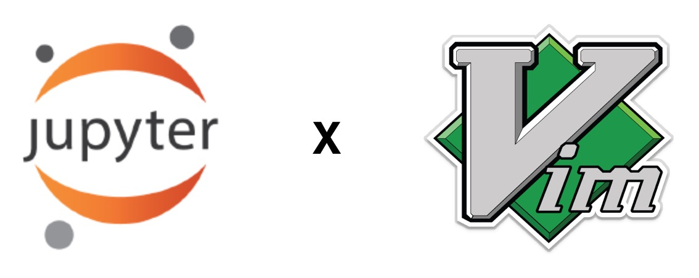
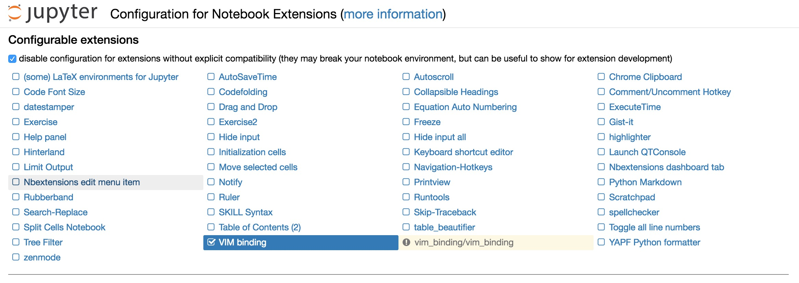

這篇文章會提到：
- 使用 vim 指令操作 jupyter notebook 的開發環境

應該很多人都同意 jupyter notebook 是一個很方便的開發環境，特別是在整理資料、寫報告、教學，大概沒有比這個更方便的環境了吧！（有的話拜託跟我說一下）
一直以來覺得 jupyter notebook 的缺點就是操作起來不像 vim 一樣有很多方便的快速鍵可以用，常常需要滑鼠移來移去。趁著還有印象，就把在 jupyter notebook 上面安裝 vim 插件的方法記下來。
安裝 IPython-notebook-extensions
首先到這邊安裝 notebook 的擴充插件
|
|
安裝 vim-binding
再來到這邊安裝 jupyter-vim-binding 插件
|
|
之後可以下指令 $ jupyter nbextension enable vim_binding/vim_binding 或是到 127.0.0.1:8888/nbextensions 把它打勾就可以使用了
